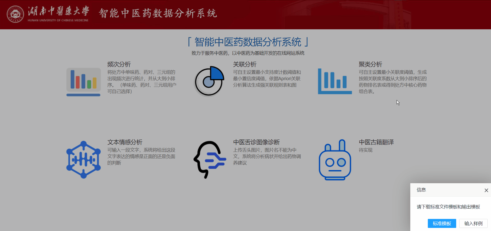
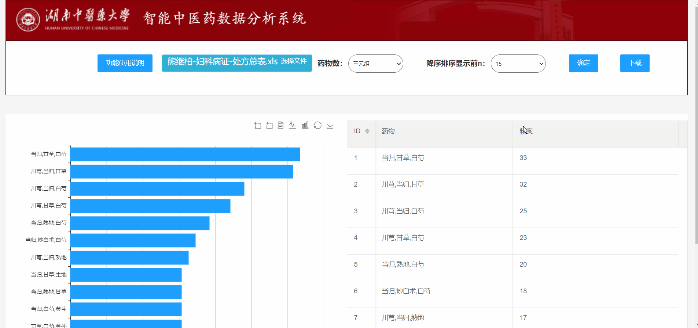

频次分析功能使用说明
一、选择文件
为保证能够有正确的药物结果集，要求：
1.上传文件需要为excel表的xsl格式；
2.上传的文件模板请在主页面中的标准输入模板中查看并下载


二、选择药对组
默认药物数为单味药，显示排名为前10；
您可以选择三种药物数，分别为单味药，药对，三元组;
您也可以选择或者手动输入需要生成表格的降序排列前N位药物;

三、下载
1、点击下载按钮，便可以得到系统分析生成的频次分析excel表格（按照出现频次从大到小排序）
2、点击统计图右上角下载按钮，将以图片形式下载显示图表到本地
